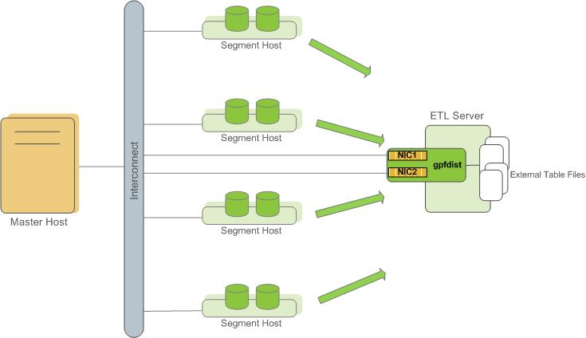
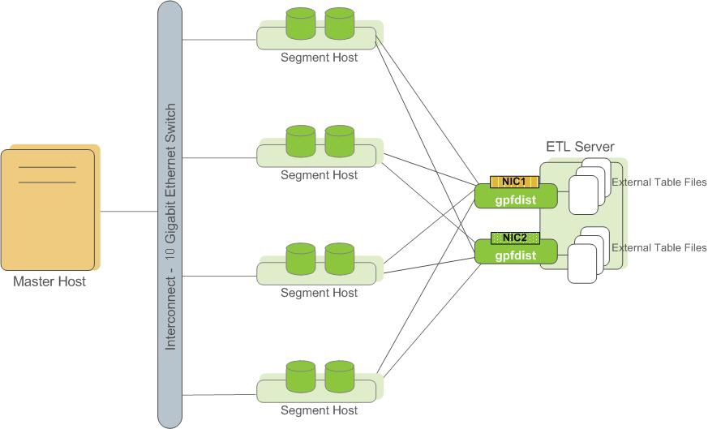

Using the SynxDB Parallel File Server (gpfdist)
The gpfdist protocol is used in a CREATE EXTERNAL TABLE SQL command to access external data served by the SynxDB gpfdist file server utility. When external data is served by gpfdist, all segments in the SynxDB system can read or write external table data in parallel.
This topic describes the setup and management tasks for using gpfdist with external tables.
- About gpfdist and External Tables
- About gpfdist Setup and Performance
- Controlling Segment Parallelism
- Installing gpfdist
- Starting and Stopping gpfdist
- Troubleshooting gpfdist
About gpfdist and External Tables
The gpfdist file server utility is located in the $GPHOME/bin directory on your SynxDB master host and on each segment host. When you start a gpfdist instance you specify a listen port and the path to a directory containing files to read or where files are to be written. For example, this command runs gpfdist in the background, listening on port 8801, and serving files in the /home/gpadmin/external_files directory:
$ gpfdist -p 8801 -d /home/gpadmin/external_files &
The CREATE EXTERNAL TABLE command LOCATION clause connects an external table definition to one or more gpfdist instances. If the external table is readable, the gpfdist server reads data records from files from in specified directory, packs them into a block, and sends the block in a response to a SynxDB segment’s request. The segments unpack rows they receive and distribute them according to the external table’s distribution policy. If the external table is a writable table, segments send blocks of rows in a request to gpfdist and gpfdist writes them to the external file.
External data files can contain rows in CSV format or any delimited text format supported by the FORMAT clause of the CREATE EXTERNAL TABLE command. In addition, gpfdist can be configured with a YAML-formatted file to transform external data files between a supported text format and another format, for example XML or JSON. See <ref> for an example that shows how to use gpfdist to read external XML files into a SynxDB readable external table.
For readable external tables, gpfdist uncompresses gzip (.gz), bzip2 (.bz2), and zstd (.zst) files automatically. You can use the wildcard character (*) or other C-style pattern matching to denote multiple files to read. External files are assumed to be relative to the directory specified when you started the gpfdist instance.
About gpfdist Setup and Performance
You can run gpfdist instances on multiple hosts and you can run multiple gpfdist instances on each host. This allows you to deploy gpfdist servers strategically so that you can attain fast data load and unload rates by utilizing all of the available network bandwidth and SynxDB’s parallelism.
- Allow network traffic to use all ETL host network interfaces simultaneously. Run one instance of gpfdist for each interface on the ETL host, then declare the host name of each NIC in the
LOCATIONclause of your external table definition (see Examples for Creating External Tables).

- Divide external table data equally among multiple gpfdist instances on the ETL host. For example, on an ETL system with two NICs, run two gpfdist instances (one on each NIC) to optimize data load performance and divide the external table data files evenly between the two gpfdist servers.

Note Use pipes (|) to separate formatted text when you submit files to gpfdist. SynxDB encloses comma-separated text strings in single or double quotes. gpfdist has to remove the quotes to parse the strings. Using pipes to separate formatted text avoids the extra step and improves performance.
Controlling Segment Parallelism
The gp_external_max_segs server configuration parameter controls the number of segment instances that can access a single gpfdist instance simultaneously. 64 is the default. You can set the number of segments such that some segments process external data files and some perform other database processing. Set this parameter in the postgresql.conf file of your master instance.
Installing gpfdist
gpfdist is installed in $GPHOME/bin of your SynxDB master host installation. Run gpfdist on a machine other than the SynxDB master or standby master, such as on a machine devoted to ETL processing. Running gpfdist on the master or standby master can have a performance impact on query execution. To install gpfdist on your ETL server, get it from the SynxDB Clients package and follow its installation instructions.
Starting and Stopping gpfdist
You can start gpfdist in your current directory location or in any directory that you specify. The default port is 8080.
From your current directory, type:
gpfdist &
From a different directory, specify the directory from which to serve files, and optionally, the HTTP port to run on.
To start gpfdist in the background and log output messages and errors to a log file:
$ gpfdist -d /var/load_files -p 8081 -l /home/`gpadmin`/log &
For multiple gpfdist instances on the same ETL host, use a different base directory and port for each instance. For example:
$ gpfdist -d /var/load_files1 -p 8081 -l /home/`gpadmin`/log1 &
$ gpfdist -d /var/load_files2 -p 8082 -l /home/`gpadmin`/log2 &
To stop gpfdist when it is running in the background:
First find its process id:
$ ps -ef | grep gpfdist
Then stop the process, for example (where 3456 is the process ID in this example):
$ kill 3456
Troubleshooting gpfdist
The segments access gpfdist at runtime. Ensure that the SynxDB segment hosts have network access to gpfdist. gpfdist is a web server: test connectivity by running the following command from each host in the SynxDB array (segments and master):
$ wget http://<gpfdist_hostname>:<port>/<filename>
The CREATE EXTERNAL TABLE definition must have the correct host name, port, and file names for gpfdist. Specify file names and paths relative to the directory from which gpfdist serves files (the directory path specified when gpfdist started). See Examples for Creating External Tables.
If you start gpfdist on your system and IPv6 networking is deactivated, gpfdist displays this warning message when testing for an IPv6 port.
[WRN gpfdist.c:2050] Creating the socket failed
If the corresponding IPv4 port is available, gpfdist uses that port and the warning for IPv6 port can be ignored. To see information about the ports that gpfdist tests, use the -V option.
For information about IPv6 and IPv4 networking, see your operating system documentation.
When reading or writing data with the gpfdist or gfdists protocol, the gpfdist utility rejects HTTP requests that do not include X-GP-PROTO in the request header. If X-GP-PROTO is not detected in the header request gpfist returns a 400 error in the status line of the HTTP response header: 400 invalid request (no gp-proto).
SynxDB includes X-GP-PROTO in the HTTP request header to indicate that the request is from SynxDB.
If the gpfdist utility hangs with no read or write activity occurring, you can generate a core dump the next time a hang occurs to help debug the issue. Set the environment variable GPFDIST_WATCHDOG_TIMER to the number of seconds of no activity to wait before gpfdist is forced to exit. When the environment variable is set and gpfdist hangs, the utility stops after the specified number of seconds, creates a core dump, and sends relevant information to the log file.
This example sets the environment variable on a Linux system so that gpfdist exits after 300 seconds (5 minutes) of no activity.
export GPFDIST_WATCHDOG_TIMER=300